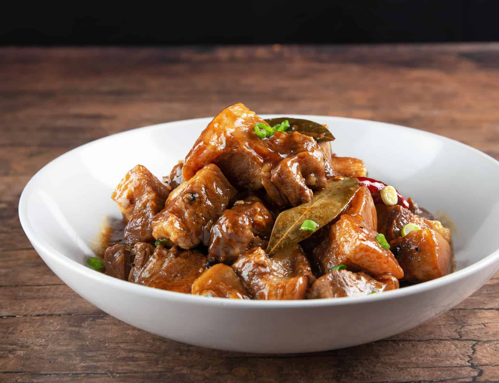

Chicken Adobo
Home

Description
Pork adobo is the unofficial national dish of the Philippines consisting of pork chunks slow-cooked in a rich,
savory, and tangy reduction of soy sauce, vinegar, garlic, bay leaves, and whole black peppercorns
Ingridients
- Pork belly
- garlic
- Onion
- Soy sauce
- Salt
- Dried bay leaves
- vinegar
Instructions
- Combine the marinade: Mix 1/2 cup soy sauce, 1/2 cup cane or white vinegar, 1 whole head of smashed or
minced garlic, 1 tsp whole black peppercorns, and 2–3 bay leaves in a bowl.
- Marinate the meat: Submerge 1kg of chicken thighs or pieces in the mixture and let it sit for at least 30
minutes (or overnight in the fridge for deeper flavor).
- Brown the chicken: Heat 1 tbsp of cooking oil in a pan, then sear the chicken pieces skin-side down
until golden brown on both sides.
- Pour in the marinade: Add the leftover marinade, 1 cup of water, and 1 tbsp of brown sugar (optional)
into the pan with the chicken.
- Simmer without stirring: Bring the liquid to a full boil, and do not stir for the first 5 minutes to
let the raw vinegar cook off.
- Cook until tender: Cover the pan partially, lower the heat to a simmer, and cook for 20 to 30 minutes
until the chicken is tender.
- Reduce and serve: Remove the lid and simmer on higher heat for 3 to 5 minutes until the sauce
thickens into a rich glaze, then serve hot over steamed rice.